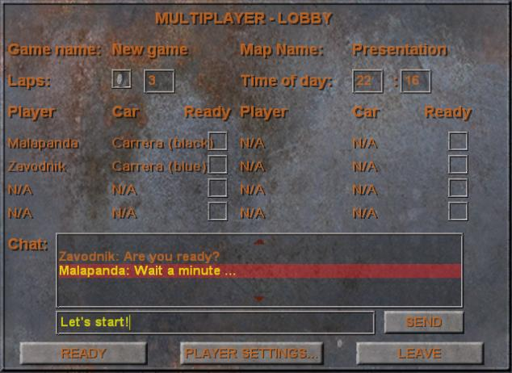

Upon launching Unlimited Racer you will see the main menu. From there you can start Single Player game, Multi Player game, modify Settings or exit to windows.
Read this before you or your child use any video game.
Some people are susceptible to epileptic seizures or loss of consciousness when
viewing certain types of blinking lights or other stimuli commonly found in
our everyday environment. These persons are at risk of having a seizure when
they look at certain televised images or when they play video games. Such phenomena
can occur even in persons with no medical history of epilepsy and who have never
had an epileptic seizure. If you or a member of your family has ever shown symptoms
related to epilepsy (seizure or loss of consciousness) in the presence of illuminated
stimuli, consult your doctor before use. We advise parents to provide supervision
when chlidren play video games. Stop playing and consult a doctor immediately
if you or your child experience any of the following symptoms: dizziness, vision
problems, eye or muscle spasms, loss of consciousness, disorientation, involuntary
movement or convulsion.
Always take the following precautions when playing video games:
You will start installation of Unlimited Racer by running Setup.exe.
Step 1: Installation of necessary components. Click on "Install" to install components. Click on "Cancel" to cancel installation.
Step 2: Game installation welcome dialog. Click on "Next" to continue. Click on "Cancel" to cancel installation.
Step 3: License agreement dialog. Click on "I Agree" and then click on "Next" to continue.
Step 4: Choose game installation folder and for whom will be application installed. Then click on "Next" to continue.
Step 5: Confirmation of installation. Click "Next" to begin installation or "Back" to review your chosen installation options. Click "Cancel" to cancel installation.
Step 6: Unlimited Racer game is installing. Wait for installation to be finished.
Step 7: After installation is finished you will be promted to install DirectX. Follow DirectX installator instructions to succesfully install DirectX. It is highly recommended to install DirectX!
Step 8: Installation is completed. Click on "Close" to exit Unlimited Racer installator.
Upon launching Unlimited Racer you will see the main menu. From there you can start Single Player game, Multi Player game, modify Settings or exit to windows.

In single player game, you race alone or againts computer controlled opponents. There are few options that can adjust your gameplay: You can specify name by which you will be know in Unlimited Racer, what car you want to drive and which map do you want to race on. Additionally, you can set number of laps per race. Unchecking of circuit checkbox will put you into free ride mode where you can race freely through the map. You can summon Opponents dialogue by clicking on Opponents button. Time of day is only a cosmetical option that specifies time of the race. It will alter light conditions of the map and allow you to race at midnight or at sunrise!

Opponents dialogue allows you to add or remove computer controlled cars into your game. You can see available cars listed in right column and cars selected as opponents in left column. There can be no more than 7 opponents in any game.

If you want to start multiplayer game, you must first create game or join game. You can create new multiplayer game by clicking on "Create game" button. You can join game by selecting game in game list or by typing IP address and Port, then you must click on "Join game" button. You can return back to main menu by clicking on "Back" button. If there is problem with joining server, please check network connection and, whether you have identical map with server.
Before you create game, you must type in game name. You choose whether you want to start dedicated server, which means, that no player will play on this computer, only game server will run on computer. You must choose map and by clicking on "Opponents..." button, you can choose computer opponents. At last you can click on "Create game" button to create game or return back by clicking on "Back" button.

After you join game player settings dialogue will appear. There you type in player name and choose your car for race. Then you click can either confirm your player settings or cancel your player settings.

After you select your player setting, you appear in the multiplayer lobby game room. There you can select few race options, if you created game. You can type in number of laps you want to race on. You can select free ride mode by unchecking checkbox before number of laps. You can also select time of day by typing in hour and minutes of day. All players can chat with each other by typing in message in chat edit and then either clicking on "Send" button or pressing enter on keyboard. All players must click on "Ready" button to indicate, that they are ready to go to race, before player on server can click on "Start game" button ("Start game" button appears instead of "Ready" button on machine, where game was created) to start game. Player can leave lobby by clicking on "Leave" button. If player leaves on machine, where the game was created, all players will leave lobby and thus multiplayer game. Player can also adjust its player settings by clicking on "Player settings..." button.
When dedicated server is running following dialogue appears on the screen of game server. Although server will stop, if no players plays multiplayer game anymore, you can also stop server by clicking on "Stop server" button. You can force all players to return to multiplayer game lobby by clicking on "To lobby" button.

Settings dialogue allows you to set various game options. You can go to graphic settings by clicking on "Graphic settings" button. You can go to sound settings by clicking on "Sound settings" button. You can go to key settings by clicking on "Key settings" button. You can also return back by clicking on "back" button.

Graphic settings dialogue allows you to set various graphic settings related to Unlimited racer game. Resolution allows you to set appropriate graphic resolution from listed resolutions. Gamma allows you to change monitor gamma by sliding bar. You can set terrain, model and grass complexity by selecting an option from list. You can also set texture quality by selecting one option from list. You can set anisotropic filtering, which makes far objects and terrain texture look better or worse depending on option you select. You can set scene antialiasing to make edges of objects look better. You can choose, whether objects will have shadows or not by checking or unchecking dynamic shadows option. You can select better car lighting by checking per pixel lighting (cars) option. In the end you can either comfirm changes you made by clicking on "Ok" button or cancel changes by clicking on "Cancel" button.

Sound settings dialogue allows you to change music volume. You can set music volume by sliding bar. If you drag the slider of sliding bar totally to the left, music is turned off. You can either comfirm your changes by clicking on "Ok" button or cancel changes by clicking on "Cancel" button.

Key settings dialogue allows you to set keyboard keys mapping for the game. You can set key mapping by clicking on appropriate key mapping and then press key on keyboard, which becomes new key mapping for option. Following table explains options for key mapping change.
| Option: | Option description: |
| Accelerate | Car accelerate key |
| Decelerate | Car brake key |
| Steer left | Car steer left key |
| Steer right | Car steer right key |
| Hand brake | Car hand brake key |
| Shift up | Car shift up key |
| Shift down | Car shift down key |
| Cycle view | Camera view cycle key |
| Restart car | Car position restart key |
After you choose new keyboard key mapping, you can either comfirm new options by clicking on "Ok" button or cancel changes by clicking on "Cancel" button.
Game interface looks like on the picture above. There is game race view and HUD (Head-up display) consisting of four information parts. In the bottom right corner is speedometer showing the speed of the car. In the bottom left corner is the gear information, which shows the gear car has actually shifted. In the upper left corner is race state information table, which informs you of the position in the race. In the upper right corner appears music information for a while when new music track starts playing. You can show game menu by pressing ESC key any time.
The goal of Unlimited racer is to be first, to win the race, when you are playing on lap race mode. If you are not playing on lap race mode, it's just race for fun and you can do whatever you can and want.
If you have video card with 64 MB of video RAM, then it's strongly recommended
to turn off antialiasing. Also you can open options.cfg configuration file in any text editor (Notepad for example) and replace following lines:
LOD0TerrainTexWidth = 2048
LOD0TerrainTexHeight = 2048
for:
LOD0TerrainTexWidth = 1024
LOD0TerrainTexHeight = 1024
This will save a considerable amount of video memory and thus allows you in most cases to play game fine. (Note that you can decrease mentioned numbers even more, but the appearance of Unlimited Racer will decrease as well.)
If you have a Radeon video card you should download latest drivers. See General lockups / Video problems.
If your computer hard locks without error message, reboots during game play, will not start, or has distorted graphics of any sort, please make sure you have the latest video card drivers for your 3D accelerator. Contact your hardware manufacturer to find the latest drivers available.
If you are experiencing sound distortions, periodic loss of sound, loud squelches, whistles, or pops, confirm that you have the latest version of DirectX installed on your system. Also, verify that your sound drivers are compatible with the newest version of DirectX. Contact your hardware manufacturer to find latest drivers available.
If the game is not running as expected, you should always check the ErrorOutput.log file possible error report.
With any problem you can seek our forums for a solution: http://forum.crazyanimals.net or you can contant our support by e-mail: support@crazyanimals.net.
You are welcome to visit our site at http://www.crazyanimals.net.
For Crazy Animals development team:
Others: